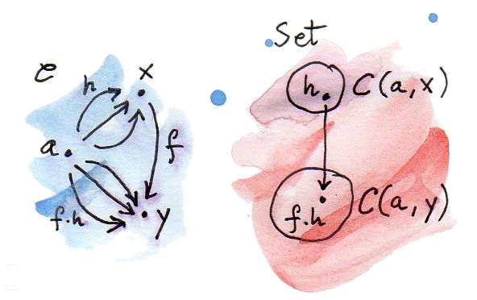

是时候稍微谈谈集合了。数学家对集合论爱恨交加。它是数学的汇编语言——至少曾经是。范畴论在某种程度上试图远离集合论。例如，众所周知，所有集合组成的集合并不存在，但所有集合组成的范畴 Set 却存在。这很好。另一方面，我们假设一个范畴中任意两个对象之间的态射构成集合，甚至把它称为 hom 集（hom-set）。公平地说，范畴论有一个分支，其中态射不构成集合，而是另一个范畴中的对象。使用 hom 对象而非 hom 集的范畴称为富范畴（enriched category）。不过接下来仍坚持使用传统而可靠的 hom 集范畴。
在范畴对象之外，集合大概是最接近“没有特征的团块”的东西。集合有元素，但很难对这些元素说些什么。有限集合可以数出元素个数；无限集合也可以借助基数（cardinal number）以某种方式计数。例如，自然数集合比实数集合小，尽管两者都是无限的。但也许令人惊讶的是，有理数集合与自然数集合一样大。
除此之外，集合的全部信息都可以编码在集合之间的函数中——尤其是称为同构的可逆函数。就所有实际用途而言，同构的集合是相同的。在引来基础数学家的怒火之前，我要说明：相等与同构的区别具有根本重要性。事实上，它是数学最新分支之一——同伦类型论（Homotopy Type Theory, HoTT）——主要关心的问题之一。我提到 HoTT，是因为它是一种从计算中汲取灵感的纯数学理论；它的主要倡导者之一 Vladimir Voevodsky 在研究 Rocq 定理证明器时获得过一次重大的顿悟。数学与编程之间的影响是双向的。
关于集合的重要经验是：比较元素类型不同的集合没有问题。例如，可以说某个自然变换集合与某个态射集合同构，因为集合就是集合。这里的同构只表示：一个集合中的每个自然变换，都与另一个集合中的唯一态射相对应，反之亦然；它们可以一一配对。若苹果和橙子是不同范畴中的对象，就不能直接比较苹果与橙子；但可以比较苹果集合与橙子集合。把范畴问题转化成集合论问题，常常能给我们必要的洞见，甚至让我们证明有价值的定理。
Hom 函子
每个范畴都自带一族到 Set 的规范映射。这些映射其实是函子，因此保持范畴的结构。下面构造其中一个。
固定 C 中一个对象 a，再取 C 中另一个对象 x。Hom 集 C(a,x) 是一个集合，也就是 Set 中的对象。当保持 a 固定而改变 x 时，C(a,x) 也会在 Set 中变化。因此我们得到了从 x 到 Set 的映射。

若想强调把 hom 集看作第二个参数上的映射，就使用记号 C(a,-)，其中横线是参数占位符。
这个对象映射很容易扩展为态射映射。取 C 中任意对象 x、y 之间的态射 f。在刚定义的映射下，x 映射到集合 C(a,x)，y 映射到 C(a,y)。若这个映射要成为函子，f 必须映射成两个集合之间的函数：
逐点定义这个函数，也就是分别定义它对每个参数的作用。参数应取 C(a,x) 的任意元素，称为 h。只要首尾相接，态射就能复合。恰好 h 的目标与 f 的源匹配，所以它们的复合：
是从 a 到 y 的态射，因此属于 C(a,y)。

我们找到了从 C(a,x) 到 C(a,y) 的函数，它可以作为 f 的像。若不会混淆，把这个提升后的函数写成 C(a,f)，它对态射 h 的作用为：
因为这个构造适用于任何范畴，它也必须适用于 Haskell 类型范畴。在 Haskell 中，hom 函子更常被称为 Reader 函子：
type Reader a x = a -> xinstance Functor (Reader a) where
fmap f h = f . h现在考虑：若不是固定 hom 集的源，而是固定目标，会发生什么？换句话说，映射 C(-,a) 也是函子吗？是，但它不是协变函子，而是逆变函子。这是因为同样的首尾匹配会产生与 f 的后复合，而不是 C(a,-) 情况下的前复合。
我们已经在 Haskell 中见过这个逆变函子，并称它为 Op：
type Op a x = x -> ainstance Contravariant (Op a) where
contramap f h = h . f最后，如果让两个对象都变化，就得到 Profunctor C(-,=)：它在第一个参数上逆变，在第二个参数上协变（为强调两个参数可以独立变化，用双横线中的第二种横线作另一个占位符）。讨论函子性时已经见过这个 Profunctor：
instance Profunctor (->) where
dimap ab cd bc = cd . bc . ab
lmap = flip (.)
rmap = (.)重要经验是：这个观察在任何范畴中都成立——从对象到 hom 集的映射具有函子性。因为逆变等价于从对偶范畴出发的映射，可以把这个事实简洁地写成：
可表函子
我们已经看到，对于 C 中对象 a 的每种选择，都会得到从 C 到 Set 的一个函子。这种到 Set 的结构保持映射常称为表示（representation）：我们把 C 的对象与态射表示成 Set 中的集合与函数。
函子 C(a,-) 本身有时就称为可表的。更一般地，若某个函子 F 对某个 a 与 hom 函子自然同构，就称 F 为可表函子（representable functor）。这样的函子必然取值于 Set，因为 C(a,-) 正是如此。
之前说过，我们常把同构集合看成相同的。更一般地，也把一个范畴中的同构对象看成相同的，因为对象除了通过态射与其他对象（以及自身）建立的关系外，不再有别的结构。
例如，之前讨论过幺半群范畴 Mon，它最初以集合为模型。但我们小心地只选取保持集合上幺半群结构的函数作为态射。因此，如果 Mon 中两个对象同构，也就是它们之间存在可逆态射，那么它们拥有完全相同的结构。若查看它们所基于的集合与函数，就会发现一个幺半群的单位元映射到另一个的单位元，两个元素的积映射到各自像的积。
同样的推理可用于函子。两个范畴之间的函子构成一个范畴，其中自然变换扮演态射。因此，若两个函子之间存在可逆自然变换，它们就同构，也可以被视为相同。
从这个视角分析可表函子的定义。要让 F 可表，需要：C 中存在一个对象 a；存在从 C(a,-) 到 F 的自然变换 α；存在反方向的自然变换 β；并且它们的复合是恒等自然变换。
考察 α 在某对象 x 处的分量。它是 Set 中的函数：
该变换的自然性条件告诉我们，对任意从 x 到 y 的态射 f，下图交换：
在 Haskell 中，用多态函数代替自然变换：
alpha :: forall x. (a -> x) -> F x这里 forall 量词可省略。自然性条件：
fmap f . alpha = alpha . fmap f因参数性（parametricity）而自动满足（这是前面提过的那些免费定理之一）；要理解为左边的 fmap 由函子 F 定义，右边的 fmap 由 Reader 函子定义。Reader 的 fmap 只是函数前复合，因此可以更明确。让等式作用于 C(a,x) 的元素 h，自然性条件简化为：
fmap f (alpha h) = alpha (f . h)另一个变换 beta 方向相反：
beta :: forall x. F x -> (a -> x)它必须满足自然性条件，并且是 alpha 的逆：
alpha . beta = id = beta . alpha以后会看到，只要 F a 非空，从 C(a,-) 到任意 Set 值函子的自然变换总是存在（Yoneda 引理），但它未必可逆。
以列表函子以及作为 a 的 Int 为例。下面的自然变换可以完成工作：
alpha :: forall x. (Int -> x) -> [x]
alpha h = map h [12]这里任意选了数字 12，并创建只含它的列表。然后可把函数 h fmap 到列表上，得到一个元素类型为 h 返回类型的列表。（事实上，有多少个整数列表，就有多少个这样的变换。）
自然性条件等价于 map（列表版 fmap）的可组合性：
map f (map h [12]) = map (f . h) [12]但若尝试寻找逆变换，就必须从任意类型 x 的列表得到返回 x 的函数：
beta :: forall x. [x] -> (Int -> x)你可能想到用 head 从列表中取出一个 x，但它无法处理空列表。注意，无论用什么类型 a 替代 Int，这里都行不通。所以列表函子不可表。
还记得我们曾把 Haskell（自）函子想成某种容器吗？同样，可以把可表函子想成存储函数调用记忆化结果的容器（Haskell 中 hom 集的成员就是函数）。表示对象——C(a,-) 中的类型 a——可视为键类型，用它访问函数的制表值。称为 alpha 的变换叫作制表（tabulate），它的逆 beta 叫作索引（index）。下面是稍作简化的 Representable 类型类定义：
class Representable f where
type Rep f :: *
tabulate :: (Rep f -> x) -> f x
index :: f x -> Rep f -> x注意，表示类型——也就是我们的 a，这里称为 Rep f——是 Representable 定义的一部分。星号只表示 Rep f 是一个类型（而非类型构造器或其他更奇特的 kind）。
不能变为空的无限列表，也就是流（stream），是可表的：
data Stream x = Cons x (Stream x)可以把它们看作以 Integer 为参数的函数所产生的记忆化值。（严格说应使用非负自然数，但我不想让代码变复杂。）
要对这样的函数执行 tabulate，就创建一个无限值流。当然，这只有依靠 Haskell 的惰性求值才可能；各个值会按需计算。使用 index 访问记忆化值：
instance Representable Stream where
type Rep Stream = Integer
tabulate f = Cons (f 0) (tabulate (f . (+1)))
index (Cons b bs) n =
if n == 0 then b else index bs (n - 1)有趣的是，可以用一种记忆化方案覆盖返回类型任意的整个函数族。
逆变函子的可表性定义类似，只是固定 C(-,a) 的第二个参数。等价地，也可以考虑从 Cop 到 Set 的函子，因为 Cop(a,-) 与 C(-,a) 相同。
可表性还有一个有趣转折。记住，在笛卡尔闭范畴中，hom 集可以在内部当作指数对象处理。Hom 集 C(a,x) 等价于 xa；对于可表函子 F，可以写作：-a = F。
纯粹为了好玩，对等式两边取对数：
当然，这只是形式变换；但若了解对数的一些性质，它会很有帮助。特别是，以积类型为基础的函子可以用和类型表示，而和类型函子一般不可表（例如列表函子）。
最后请注意，可表函子给出了同一事物的两种不同实现：一种是函数，一种是数据结构。它们拥有完全相同的内容——使用相同的键会取回相同的值。这就是我所说的“相同”。就内容而言，两个自然同构的函子完全相同。另一方面，两种表示往往实现不同，也可能有不同的性能特征。记忆化（memoization）用来改善性能，可能大幅缩短运行时间。能够为同一个底层计算生成不同表示，在实践中很有价值。因此令人惊讶的是，尽管范畴论完全不关心性能，它仍提供了大量探索具有实用价值之替代实现的机会。
习题
- 证明 hom 函子把 C 中的恒等态射映射成 Set 中相应的恒等函数。
点击展开参考答案
对协变 Hom 函子 C(a,-)，恒等态射
id_x的提升把任意h:a→x映射为id_x∘h=h，所以它就是 C(a,x) 上的恒等函数。逆变情形同理：h∘id_x=h。 - 证明
Maybe不可表。点击展开参考答案
若
Maybe x ≅ (a→x)对所有x自然成立，取空类型Void。Maybe Void只有Nothing一个值，因此函数集a→Void也必须只有一个值，这迫使a为空。再取单元类型()：Void→()只有一个函数，而Maybe ()有Nothing与Just ()两个值，矛盾。（忽略 Haskell 的底值。） Reader函子可表吗？点击展开参考答案
可表。
Reader a x = a→x本身就是 Hom 函子 C(a,-)，表示类型为a；tabulate与index都可取恒等函数。- 使用
Stream表示，对一个“求参数平方”的函数做记忆化。点击展开参考答案
squares :: Stream Integer squares = tabulate (\n -> n * n)随后
index squares n会按需计算并访问n²。 - 证明
Stream的tabulate与index确实互为逆。（提示：使用归纳法。）点击展开参考答案
对非负整数
n归纳。基例：index (tabulate f) 0=f 0。归纳步把流尾看作tabulate (f . (+1))，于是index (tabulate f) (n+1)=f(n+1)。反方向，对流按观察等价证明：tabulate (index s)的头与s相同；其尾的每个索引也由同一归纳论证与s的尾相同，故两条无限流相等。 - 函子：
是可表的。你能猜出表示它的类型吗？实现Pair a = Pair a atabulate与index。点击展开参考答案
表示类型是
Bool，因为Bool→a恰好保存两个a：instance Representable Pair where type Rep Pair = Bool tabulate f = Pair (f False) (f True) index (Pair x y) b = if b then y else x
参考文献
- Catsters 关于可表函子的视频。